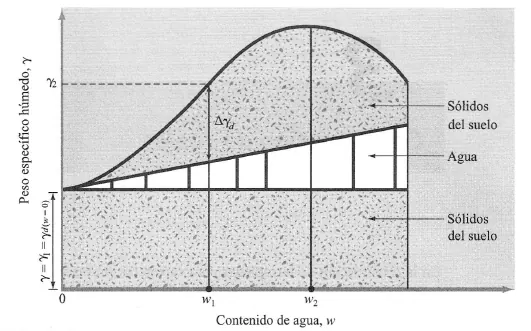

Compactación#
Importante
Objetivos de aprendizaje
Diferenciar los métodos de mejoramiento de suelos y el propósito de la compactación.
Interpretar la curva de compactación y los ensayos Proctor estándar y modificado.
Explicar el efecto del tipo de suelo y de la energía de compactación.
Especificar y controlar la compactación en campo.
Mejoramiento de suelos#
Cuando el suelo natural no tiene las propiedades requeridas por una obra, se puede reemplazar o mejorar. Los métodos de mejoramiento se agrupan en físicos, como el confinamiento, la precarga para consolidación previa y la mezcla con otros suelos; químicos, como la estabilización con cal, cemento, asfalto o sales; y mecánicos, cuyo representante principal es la compactación.
Definición y objetivos#
La compactación es el proceso, generalmente mecánico, mediante el cual se obliga a las partículas del suelo a ponerse en contacto más estrecho, expulsando el aire de los poros. Reduce el volumen de vacíos de manera más o menos rápida sin expulsar agua, de modo que el suelo compactado queda casi siempre parcialmente saturado. Este es el rasgo que la distingue de la consolidación, en la que la reducción de volumen se produce por la expulsión lenta de agua de un suelo saturado bajo carga sostenida (capítulo Consolidación y asentamientos).
La compactación busca mejorar las propiedades ingenieriles del material: aumenta la resistencia y la capacidad de carga, reduce la compresibilidad y los asentamientos, disminuye la permeabilidad y la capacidad de absorber agua, y reduce la contracción. Tiene también efectos indeseables cuando es excesiva: produce un material propenso al agrietamiento y, en suelos finos plásticos, aumenta el potencial de expansión al humedecerse. Se aplica en terraplenes, presas de tierra, diques, rellenos estructurales, bases y subbases de pavimentos y en el mejoramiento de terrenos para cimentaciones.
Equipos#
Los equipos de compactación actúan por presión estática, impacto o vibración. Los rodillos pata de cabra concentran la presión en pequeñas áreas y amasan el suelo, por lo que son eficientes en suelos finos cohesivos. Los rodillos lisos se usan en materiales granulares y para el acabado de superficies. Los compactadores neumáticos combinan presión y amasado. Los rodillos y placas vibratorias son los más eficientes en arenas y gravas, porque la vibración reduce temporalmente la fricción entre partículas y permite su reacomodo. En general, los materiales friccionantes se compactan mejor con vibración y los plásticos con carga estática o amasado.

Figura 38 Rodillo liso vibratorio, eficiente en materiales granulares.#
El ensayo Proctor y la curva de compactación#
Proctor (1933) mostró que, para una energía de compactación dada, el peso unitario seco que se alcanza depende del contenido de agua. En el ensayo Proctor estándar (ASTM D698) el suelo se compacta en un molde en tres capas con 25 golpes de un martillo de 24,5 N que cae 305 mm, con una energía de unos 600 kN·m/m³. El Proctor modificado (ASTM D1557) usa un martillo de 44,5 N que cae 457 mm sobre cinco capas, con una energía de unos 2700 kN·m/m³, que representa mejor la de los equipos modernos.
Para cada punto del ensayo se mide el peso unitario húmedo y la humedad, y se calcula el peso unitario seco:
La curva \(\gamma_d\)-\(w\) presenta un máximo, el peso unitario seco máximo \(\gamma_{d,max}\), que se alcanza con la humedad óptima \(w_{opt}\). A la izquierda del óptimo está la rama seca: el agua actúa como lubricante y facilita el reacomodo de las partículas, de modo que la densidad aumenta con la humedad. A la derecha está la rama húmeda: el agua ocupa espacio que podrían ocupar las partículas y la densidad disminuye.


Figura 39 Curva de compactación y curva de saturación.#
La curva de compactación nunca puede cruzar la curva de cero vacíos de aire, que corresponde a la saturación completa:
Ejemplo resuelto: curva de compactación
Un ensayo Proctor estándar sobre un suelo residual limoso con \(G_s=2{,}70\) dio los siguientes resultados. Determine \(\gamma_{d,max}\) y \(w_{opt}\), y verifique que los puntos estén bajo la curva de cero vacíos.
\(w\) (%) |
10 |
12 |
14 |
16 |
18 |
|---|---|---|---|---|---|
\(\gamma\) (kN/m³) |
18,0 |
19,3 |
20,2 |
20,3 |
20,0 |
\(\gamma_d=\gamma/(1+w)\) (kN/m³) |
16,36 |
17,23 |
17,72 |
17,50 |
16,95 |
\(\gamma_{zav}\) (kN/m³) |
20,86 |
20,01 |
19,22 |
18,50 |
17,82 |
El máximo se ubica cerca de \(w_{opt}\approx14\,\%\) con \(\gamma_{d,max}\approx17{,}7\) kN/m³. Todos los valores de \(\gamma_d\) están por debajo de \(\gamma_{zav}\), como debe ser. Si la especificación exige una compactación relativa del 95 %, el peso unitario seco mínimo aceptable en campo es \(0{,}95\times17{,}7=16{,}8\) kN/m³.
Efecto del tipo de suelo y de la energía#
La forma de la curva depende del suelo. Las arenas bien gradadas alcanzan pesos unitarios altos con curvas agudas; las arcillas plásticas tienen pesos unitarios máximos menores, humedades óptimas mayores y curvas más planas. Algunas arenas uniformes presentan curvas con dos picos o sin un máximo claro. Al aumentar la energía de compactación, el peso unitario seco máximo aumenta y la humedad óptima disminuye, de modo que los óptimos de distintas energías se ubican sobre una línea aproximadamente paralela a la curva de saturación.

Figura 40 Curvas de compactación de diferentes suelos.#
La humedad de compactación también controla la estructura del suelo. Las arcillas compactadas en la rama seca adquieren una estructura floculada, más rígida, más permeable y con mayor potencial de expansión. Las compactadas en la rama húmeda desarrollan una estructura dispersa, menos permeable y más deformable. Por eso los núcleos impermeables de las presas de tierra se compactan ligeramente del lado húmedo del óptimo.
Control en campo#
La especificación de compactación se expresa como un porcentaje mínimo del peso unitario seco máximo de laboratorio, la compactación relativa, junto con un rango de humedad alrededor del óptimo. El control en campo se hace midiendo el peso unitario y la humedad de las capas compactadas con el cono de arena, el densímetro nuclear o el método del balón de caucho. Para el geólogo, el aspecto crítico es la selección de las fuentes de material: la variabilidad de un suelo residual en una cantera de préstamo puede hacer que una sola curva Proctor no represente el material que realmente llega a la obra.
Lecturas recomendadas#
Ejercicios#
Un suelo compactado en campo tiene \(\gamma=19{,}0\) kN/m³ y \(w=15\,\%\). Si \(\gamma_{d,max}=17{,}5\) kN/m³, ¿cumple una especificación del 95 %?
¿Por qué un suelo residual derivado de cenizas volcánicas con haloisita puede dar curvas de compactación diferentes según se seque o no antes del ensayo?